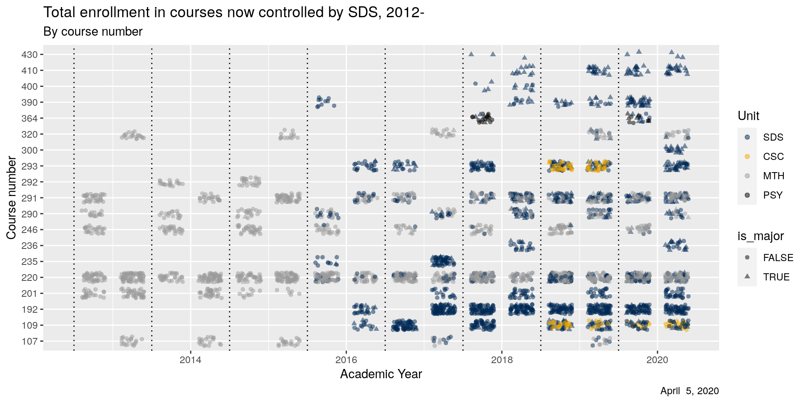
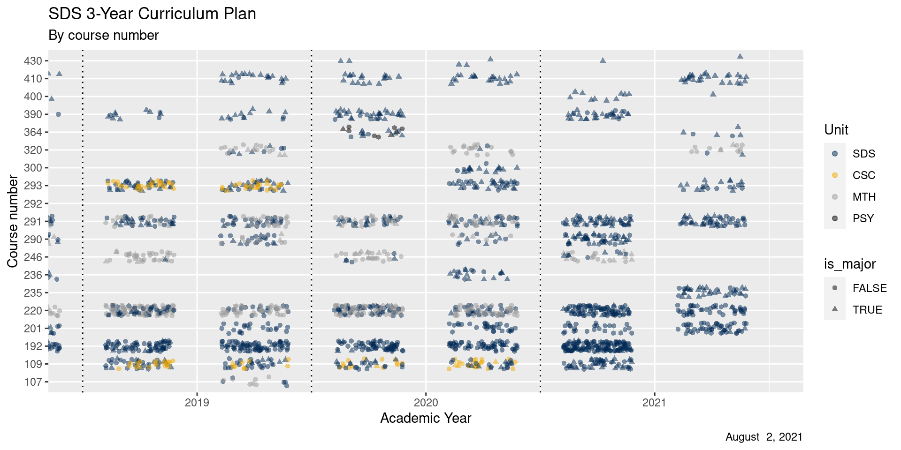
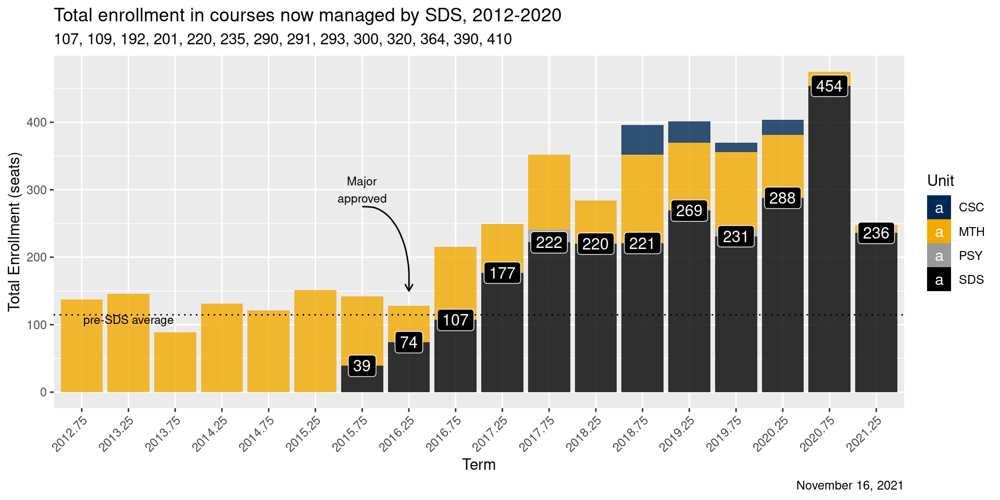
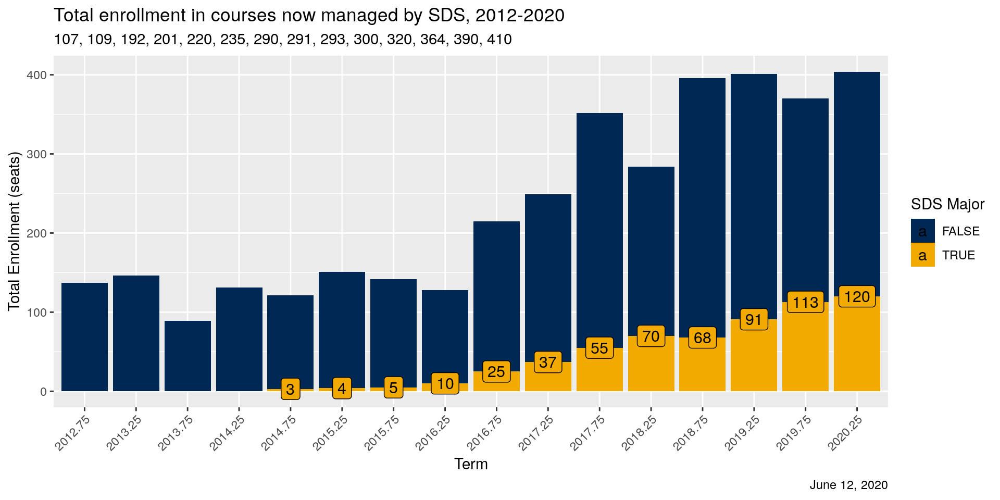
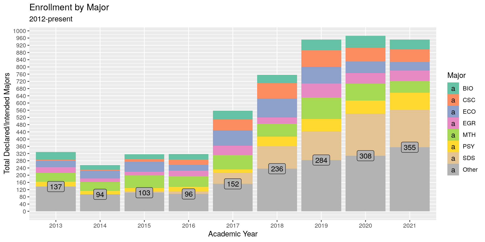
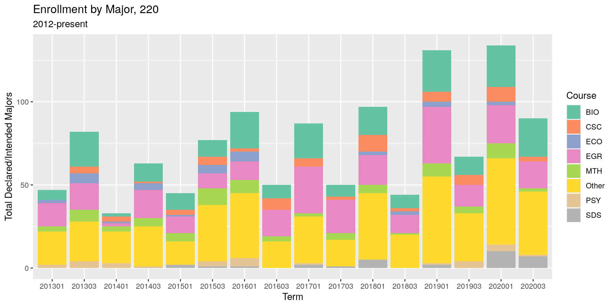
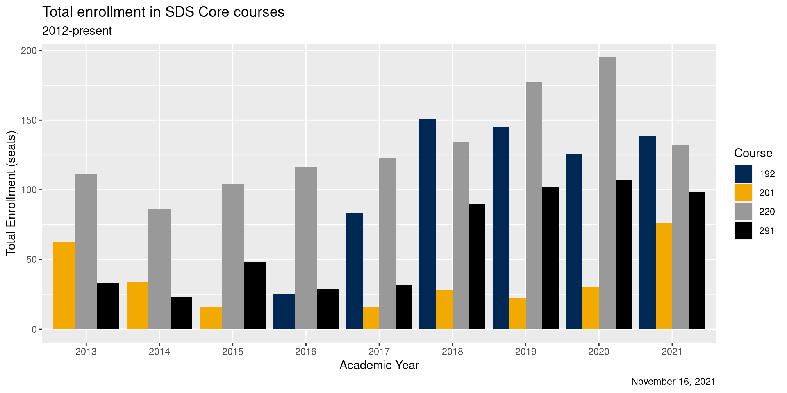
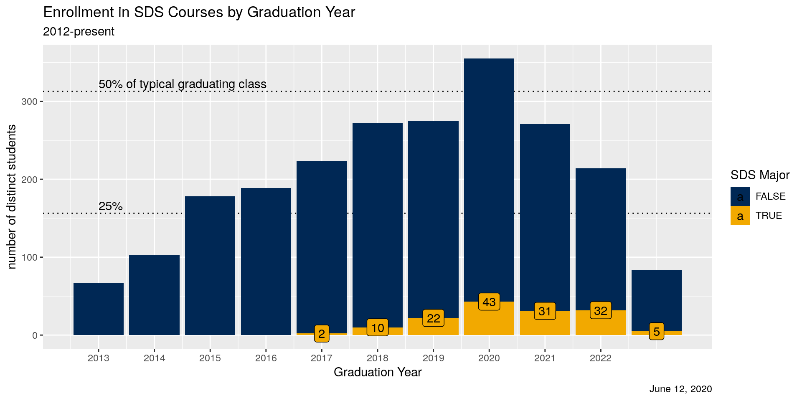

SDS enrollment analysis
2021-08-02
Curriculum Plan

Three-Year curriculum plan

Growing enrollments
## `summarise()` has grouped output by 'term_date'. You can override using the `.groups` argument.## `summarise()` has grouped output by 'crn_term'. You can override using the `.groups` argument.
Service vs. major
## `summarise()` has grouped output by 'term_date'. You can override using the `.groups` argument.
Constituents
## `summarise()` has grouped output by 'AY'. You can override using the `.groups` argument.
Intro statistics
## `summarise()` has grouped output by 'AY'. You can override using the `.groups` argument.
| subject | num_terms | num_students | avg_per_year | pct |
|---|---|---|---|---|
| EGR | 9 | 163 | 36.2 | 0.1699687 |
| BIO | 9 | 158 | 35.1 | 0.1647550 |
| PSY | 8 | 61 | 13.6 | 0.0636079 |
| CSC | 9 | 58 | 12.9 | 0.0604797 |
| NSC | 9 | 54 | 12.0 | 0.0563087 |
| BCH | 9 | 53 | 11.8 | 0.0552659 |
| SDS | 8 | 48 | 10.7 | 0.0500521 |
| MTH | 9 | 45 | 10.0 | 0.0469239 |
| CHM | 9 | 39 | 8.7 | 0.0406674 |
| ENV | 9 | 35 | 7.8 | 0.0364964 |
| GOV | 9 | 32 | 7.1 | 0.0333681 |
| GSC | 8 | 19 | 4.2 | 0.0198123 |
| EDC | 7 | 15 | 3.3 | 0.0156413 |
| EGN | 6 | 13 | 2.9 | 0.0135558 |
| SOC | 5 | 12 | 2.7 | 0.0125130 |
| ANT | 7 | 11 | 2.4 | 0.0114703 |
| ECO | 5 | 10 | 2.2 | 0.0104275 |
| ENG | 6 | 9 | 2.0 | 0.0093848 |
| EVS | 5 | 8 | 1.8 | 0.0083420 |
| MUS | 4 | 7 | 1.6 | 0.0072993 |
Core courses
## `summarise()` has grouped output by 'AY'. You can override using the `.groups` argument.
By graduation year


| N | numIntro | num220 | pct220 | pctIntro |
|---|---|---|---|---|
| 4439 | 2568 | 1178 | 0.2653751 | 0.5785087 |
## # A tibble: 5 × 5
## years_left num_seats num_students num_years `num_seats/num_years`
## <dbl> <int> <int> <int> <dbl>
## 1 0 118 118 4 29.5
## 2 1 369 348 4 92.2
## 3 2 497 452 4 124.
## 4 3 439 386 4 110.
## 5 4 152 144 4 38## # A tibble: 4 × 6
## # Groups: AY [4]
## AY `109` `192` `201` `220` `107`
## <dbl> <int> <int> <int> <int> <int>
## 1 2018 57 151 28 134 NA
## 2 2019 90 145 22 177 12
## 3 2020 79 126 30 195 NA
## 4 2021 51 139 76 132 NA## # A tibble: 4 × 6
## # Groups: AY [4]
## AY `109` `192` `201` `220` `107`
## <dbl> <int> <int> <int> <int> <int>
## 1 2018 13 35 8 37 NA
## 2 2019 18 47 10 49 3
## 3 2020 23 39 18 46 NA
## 4 2021 7 43 24 19 NA